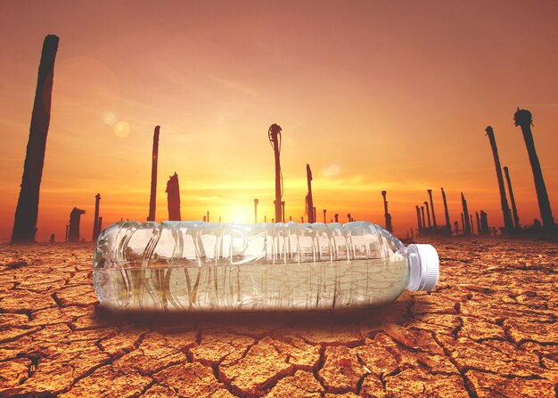

As emissões de gases de efeito estufa recobrem a Terra, retendo o calor do sol. Isso leva ao aquecimento global e às mudanças climáticas. O mundo agora está aquecendo mais rapidamente do que em qualquer outro momento registrado na história.
Causas:
Geração de energia
A geração de eletricidade e calor pela queima de combustíveis fósseis é responsável por uma boa parcela das emissões globais. A maior parte da eletricidade ainda é gerada pela queima de carvão, petróleo ou gás, o que produz dióxido de carbono e óxido nitroso, poderosos gases de efeito estufa que recobrem o planeta e retêm o calor do sol. No mundo todo, apenas cerca de um quarto da eletricidade é gerada por vento, sol e outros recursos renováveis que, ao contrário dos combustíveis fósseis, emitem pouco ou nenhum gás de efeito estufa ou poluentes do ar.
Fabricação de produtos
A manufatura e a indústria produzem emissões, principalmente pela queima de combustíveis fósseis para gerar energia para fabricar cimento, ferro, aço, eletrônicos, plástico, roupas e outros produtos. A mineração e outros processos industriais também liberam gases, assim como a indústria da construção civil. Máquinas usadas no processo de fabricação muitas vezes funcionam com carvão, petróleo ou gás, e alguns materiais, como plástico, são fabricados com produtos químicos extraídos dos combustíveis fósseis. A indústria de manufatura é uma das maiores contribuintes para as emissões de gases do efeito estufa no mundo.
Desmatamento florestal
O desmatamento de florestas para criar fazendas ou pastos, ou por outros motivos, gera emissões. Isso acontece porque, ao serem cortadas, as árvores liberam o carbono que estavam armazenando. Cerca de 12 milhões de hectares de florestas são destruídos por ano. Como as florestas absorvem o dióxido de carbono, a destruição delas também limita a capacidade da natureza em manter as emissões fora da atmosfera. O desmatamento, assim como a agricultura e outras mudanças no uso da terra, é responsável por cerca de um quarto das emissões globais de gases do efeito estufa.
Uso de transporte
A maioria dos carros, caminhões, navios e aviões funcionam com combustíveis fósseis. Isso faz com que o transporte seja um dos grandes responsáveis pelos gases de efeito estufa, especialmente emissões de dióxido de carbono. Os veículos rodoviários representam a maior parte, devido à combustão de produtos derivados de petróleo, como a gasolina, em motores de combustão interna. No entanto, as emissões de navios e aviões continuam a crescer. O transporte é responsável por quase um quarto das emissões globais de dióxido de carbono relacionadas à energia. E as tendências apontam para um aumento significativo no uso de energia para o transporte nos próximos anos.
Produção de alimentos
A produção de alimentos gera emissões de dióxido de carbono, metano e outros gases do efeito estufa de várias maneiras, inclusive pelo desmatamento e limpeza de terras para agricultura e pastagem, consumo por gado e ovelhas, produção e uso de fertilizantes e esterco para a agricultura e uso de energia para o funcionamento de equipamentos agrícolas ou barcos de pesca, geralmente com combustíveis fósseis. Tudo isso torna a produção de alimentos um dos principais contribuintes para as mudanças climáticas. E as emissões de gases do efeito estufa também ocorrem na embalagem e distribuição dos alimentos.
Energia nos edifícios
No mundo todo, prédios residenciais e comerciais consomem mais de metade de toda a eletricidade. Como eles continuam a usar carvão, petróleo e gás natural para aquecimento e resfriamento, emitem quantidades significativas de gases de efeito estufa. A crescente demanda de energia para aquecimento e resfriamento, com o maior uso de aparelhos de ar-condicionado, bem como o aumento do consumo de eletricidade para iluminação, eletrodomésticos e dispositivos conectados, têm contribuído para um aumento nas emissões de dióxido de carbono dos edifícios nos últimos anos.
Excesso de consumo
Sua casa e seu uso de energia, a forma como você se locomove, o que você come e quanto lixo você produz contribuem para as emissões de gases de efeito estufa. Além, é claro, do consumo de produtos como roupas, eletrônicos e plásticos. Uma grande parte das emissões globais de gases do efeito estufa está vinculada a residências particulares. Nossos estilos de vida têm um profundo impacto no nosso planeta. Os mais ricos têm a maior responsabilidade: a parcela 1% mais rica da população global combinada responde por mais emissões de gases do efeito estufa do que os 50% mais pobres.
Efeitos:
O aumento das temperaturas ao longo do tempo está mudando os padrões climáticos e perturbando o equilíbrio da natureza. Isso representa muitos riscos para os seres humanos e todas as outras formas de vida na terra.
O aquecimento global é uma questão premente que desafia a estabilidade e a sustentabilidade do nosso planeta. Este fenômeno, impulsionado principalmente pela atividade humana, resulta no aumento gradual da temperatura média da Terra, com repercussões profundas para o meio ambiente e para a sociedade.
As emissões de gases de efeito estufa provenientes de atividades como queima de combustíveis fósseis, desmatamento e processos industriais contribuem significativamente para o problema. Esses gases retêm o calor na atmosfera, desencadeando uma série de mudanças climáticas, como o derretimento das calotas polares, elevação do nível do mar e padrões climáticos extremos.
Os impactos do aquecimento global não são uniformes e afetam desproporcionalmente comunidades vulneráveis em todo o mundo. O aumento da frequência e intensidade de eventos climáticos extremos, como secas prolongadas e furacões, tem repercussões diretas na segurança alimentar, na infraestrutura e na saúde pública.
A necessidade de enfrentar o aquecimento global exige ação imediata em várias frentes. A transição para fontes de energia renovável é uma prioridade, reduzindo a dependência de combustíveis fósseis e diminuindo as emissões de gases poluentes. Além disso, práticas de conservação, reflorestamento e desenvolvimento sustentável são cruciais para preservar ecossistemas essenciais e limitar o impacto nas espécies.